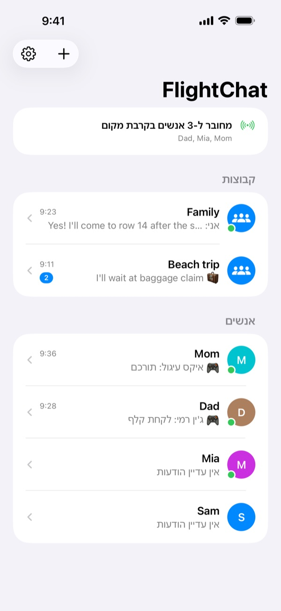
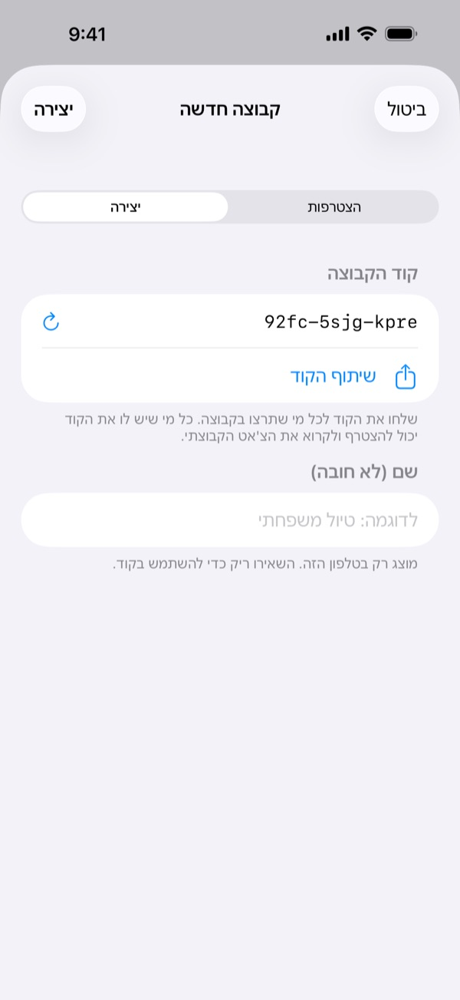
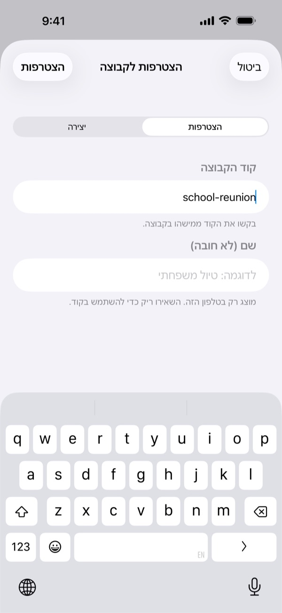
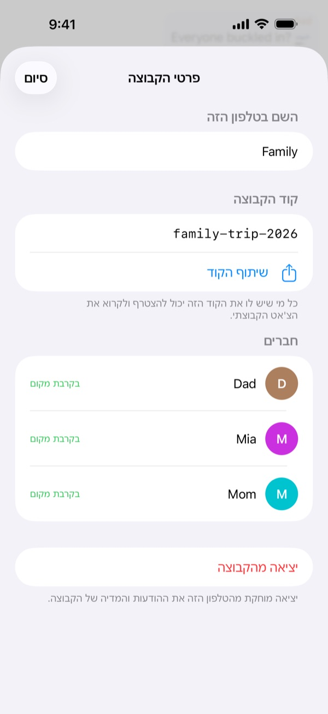
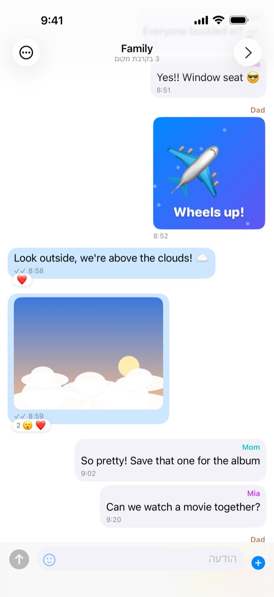
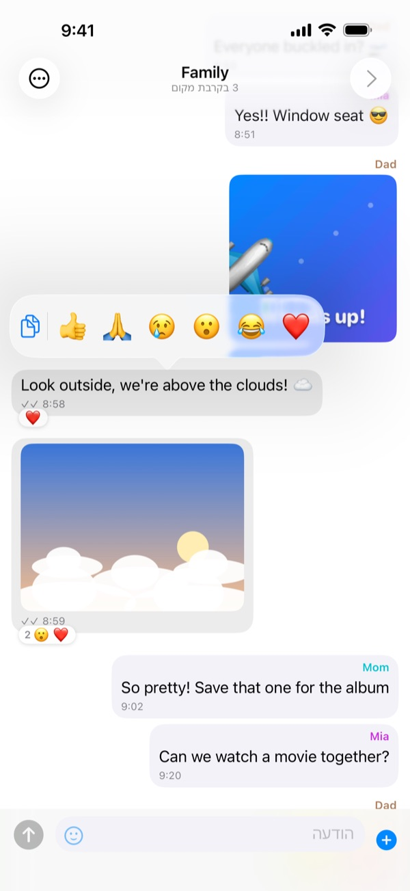
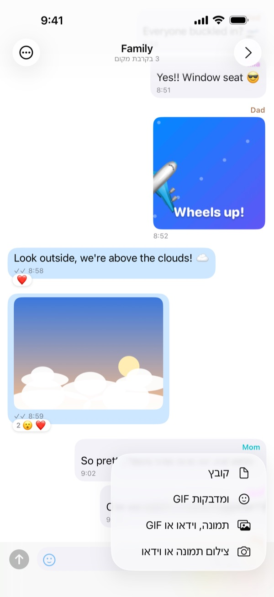
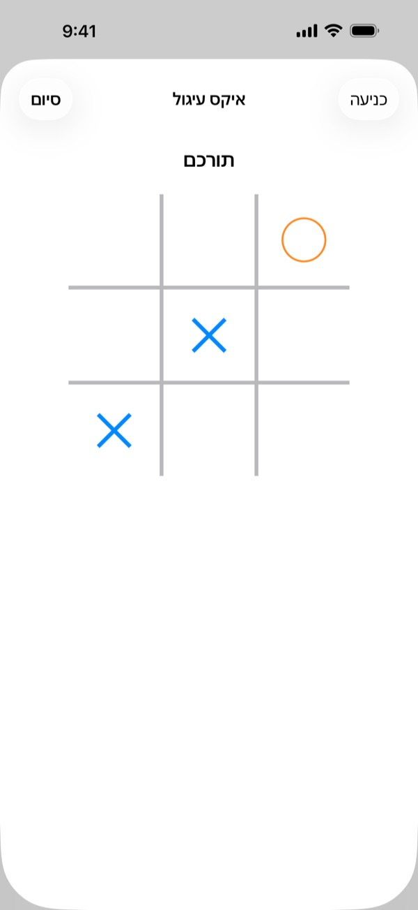
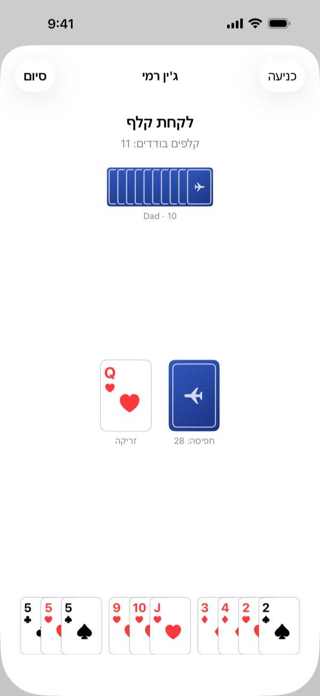
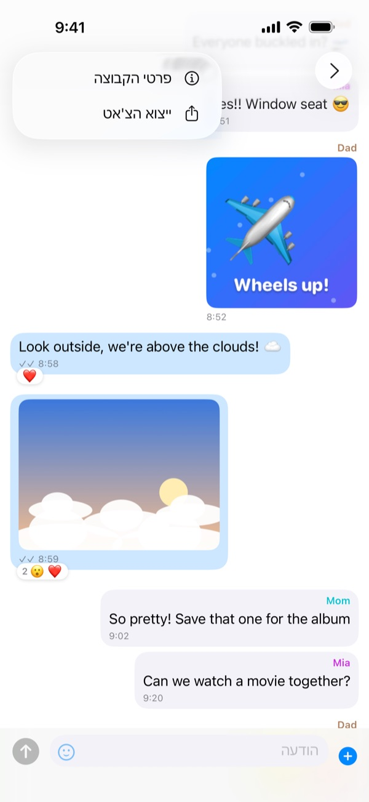

לפני הטיסה
הכינו הכול כשאתם עדיין יחד, בבית או בשער העלייה למטוס:
- התקינו את FlightChat בכל הטלפונים בקבוצה.
- אדם אחד יוצר קבוצה ומשתף את הקוד שלה עם כולם, למשל בהודעת טקסט.
- כל השאר מצטרפים לקבוצה עם הקוד הזה.
- שלחו הודעת בדיקה וודאו שכולם מקבלים אותה.
בפעם הראשונה ש-FlightChat נפתחת, אשרו לה למצוא מכשירים ברשת המקומית. בלי זה היא לא תמצא את הקבוצה.
במטוס
- הפעילו מצב טיסה כרגיל.
- פתחו את מרכז הבקרה והפעילו מחדש את Wi-Fi ואת Bluetooth. אין צורך להתחבר לרשת כלשהי.
- פתחו את FlightChat. בראש רשימת הצ'אטים מוצג מי מחובר.
הטלפונים מתחברים רק כש-FlightChat פתוחה. כשחוזרים לאפליקציה, הם מתחברים מחדש בעצמם ומשלימים את כל מה שפספסו.

קבוצות
קבוצה היא צ'אט משותף לכל מי שמזין את אותו הקוד. אפשר להיות בעד 10 קבוצות בו-זמנית, למשל אחת למשפחה ואחת לחברים באותה טיסה, ולהישאר מחוברים לכולן.
יצירת קבוצה
- ברשימת הצ'אטים הקישו על +, ואז על יצירה.
- FlightChat ממציאה קוד שקשה לנחש. אפשר לתת לקבוצה שם, אם רוצים.
- הקישו על שיתוף הקוד כדי לשלוח אותו לאחרים, ואז על יצירה. אפשר לשתף אותו גם מאוחר יותר מפרטי הקבוצה.
הצטרפות לקבוצה
הקישו על +, ואז על הצטרפות, והזינו את הקוד שקיבלתם. אותיות גדולות וקטנות לא משנות.
שינוי שם, שיתוף או יציאה מקבוצה
פתחו את הצ'אט של הקבוצה, הקישו על ⋯, ואז על פרטי הקבוצה. שם אפשר לשנות את שם הקבוצה בטלפון שלכם, לראות ולשתף את הקוד שלה, לראות את החברים בה או לצאת ממנה. יציאה מקבוצה מוחקת מהטלפון את ההודעות והמדיה שלה.
שמרו על הקודים פרטיים. כל מי שיש לו את הקוד יכול להצטרף לקבוצה ולקרוא את הצ'אט שלה.



צ'אט
- צ'אטים קבוצתיים ופרטיים: לכל קבוצה יש צ'אט משלה. באנשים מופיעים כל מי שאתם חולקים איתם קבוצה. כדי לשלוח הודעה פרטית למישהו, הקישו על השם שלו שם.
- תמונות, סרטונים, GIF וקבצים: הקישו על + ליד תיבת ההודעה. בחרו צילום תמונה או וידאו כדי להשתמש במצלמה (סרטונים עד 2 דקות), או בחרו משהו שכבר יש לכם. הקישו על הסמיילי למדבקות ו-GIF.
- תגובות: לחצו לחיצה ארוכה על הודעה ובחרו אמוג'י. משם אפשר גם להעתיק טקסט.
- מסך מלא: הקישו על תמונה או סרטון. סובבו את הטלפון לרוחב כדי לראות בגדול. השתמשו בכפתור השיתוף כדי לשמור.
- סימני וי: ✓ פירושו שההודעה נשמרה ונשלחה למי שמחובר. ✓✓ פירושו שכל מי שהיא מיועדת לו קיבל אותה.
- לא בקרבת מקום? הודעות לאנשים שלא מחוברים יישלחו כשתתחברו מחדש.



משחקים
שחקו משחק קצר עם מישהו בצ'אט פרטי: הקישו על +, ואז על משחק, ובחרו משחק. כרטיס משחק יופיע בצ'אט אצל שניכם; הקישו עליו כדי לשחק. בסיום, הקישו על משחק חוזר כדי לשחק שוב, והפעם הצד השני מתחיל.
- איקס עיגול: מניחים ✕ ו-◯ לסירוגין. שלושה בשורה מנצחים.
- ארבע בשורה: מפילים דסקיות לעמודה לסירוגין. ארבע בשורה, לרוחב, לאורך או באלכסון, מנצחות.
- אבן נייר ומספריים: שניכם בוחרים בו-זמנית. אף טלפון לא רואה את הבחירה של השני עד ששניכם בחרתם.
משחקים נשלחים רק לשחקן השני. אם אחד מכם מתרחק, המשחק מחכה וממשיך כשהטלפונים מתחברים מחדש.

משחקי קלפים
משחקי קלפים מתחילים באותה דרך: +, ואז משחק. החפיסה נטרפת בתחילת המשחק, וכל אחד רואה רק את הקלפים שלו, בתחתית המסך. הקישו על החפיסה כדי לקחת קלף, והקישו על קלף כדי לשחק אותו; קלפים שאפשר לשחק עכשיו מורמים קצת.
- מלחמה: כל אחד חושף את הקלף העליון שלו, והקלף הגבוה לוקח את שניהם (האס הכי גבוה). בתיקו, המנצח בסיבוב הבא לוקח גם את הקלפים האלה. אחרי 26 סיבובים, מי שזכה ביותר קלפים מנצח.
- שמונה משוגעת: שבעה קלפים לכל אחד. משחקים קלף מאותה סדרה או מאותו מספר כמו הקלף העליון בערימה, או לוקחים קלף. אפשר לשים שמונה על כל קלף ולבחור את הסדרה הבאה. מי שנפטר ראשון מכל הקלפים מנצח.
- ג'ין רמי: עשרה קלפים לכל אחד. בתורכם, לוקחים קלף מהחפיסה או מערימת הזריקה, ואז זורקים קלף. בונים סדרות: שלושה או ארבעה קלפים מאותו מספר, או שלושה ויותר ברצף מאותה סדרה. כשנשארים קלפים בודדים בשווי 10 נקודות או פחות, אפשר לדפוק ולסיים את הסיבוב; בלי קלפים בודדים בכלל, זה ג'ין.
הקלפים שלכם מוצגים רק בטלפון שלכם; השחקן השני רואה כמה קלפים יש לכם, לא אילו. בסוף ג'ין רמי מוצגים הקלפים של שניכם כדי שתוכלו לבדוק את הניקוד.

ייצוא צ'אט
פתחו את הצ'אט, הקישו על ⋯, ואז על ייצוא הצ'אט. FlightChat יוצרת קובץ ZIP עם השיחה כטקסט ועם התמונות, הסרטונים והקבצים שנמצאים בטלפון שלכם. אפשר לשמור אותו ב„קבצים”, לשלוח ב-AirDrop או בדוא"ל כשחוזרים לרשת.

חסימה ודיווח
- בצ'אט פרטי: הקישו על ⋯, ואז על חסימה או דיווח.
- בצ'אט קבוצתי: לחצו לחיצה ארוכה על ההודעה שלו והקישו על היד.
- לא תראו יותר את ההודעות שלו, והוא לא יוכל לשלוח לכם הודעות. הוא לא יקבל על כך הודעה.
- דיווח וחסימה שולח לנו גם דיווח בדוא"ל. אנחנו עונים תוך 24 שעות.
- ביטול חסימה נעשה בהגדרות ← אנשים חסומים.
מי שחסמתם ויש לו את קוד הקבוצה עדיין יכול לקרוא את הצ'אט הקבוצתי. כדי להוציא אותו לגמרי, סכמו עם כל השאר על קבוצה חדשה וצאו מהישנה.
אם אתם לא מרגישים בטוחים במטוס, פנו מיד לאיש צוות.
אם הטלפונים לא מתחברים
- ודאו ש-Wi-Fi ו-Bluetooth מופעלים שניהם במרכז הבקרה. מצב טיסה מכבה אותם.
- השאירו את FlightChat פתוחה בשני הטלפונים.
- ודאו שאתם באותה קבוצה: פתחו את הצ'אט הקבוצתי, הקישו על ⋯, ואז על פרטי הקבוצה, והשוו את הקודים.
- באפליקציית ההגדרות של ה-iPhone פתחו את FlightChat וודאו שרשת מקומית מופעלת.
- התקרבו זה לזה. טלפונים במרחק כמה שורות מתחברים בדרך כלל; בקצה השני של מטוס גדול זה לא תמיד יעבוד.
- רק הצטרפתם לקבוצה? הטלפונים שכבר בה ימצאו אתכם תוך כמה שניות.
- עד 8 טלפונים יכולים להיות מחוברים זה לזה בבת אחת, כולל שלכם.
שפות
FlightChat משתמשת בשפה של ה-iPhone שלכם: אנגלית, צרפתית, ספרדית, סינית, יפנית, עברית, קוריאנית או ערבית. עברית וערבית מוצגות מימין לשמאל. הודעות, שמות ומדבקות מוצגים תמיד בדיוק כפי שנשלחו. כדי לבחור שפה רק ל-FlightChat, הקישו על גלגל השיניים ברשימת הצ'אטים, בחרו שפה, הקישו על שמירה, ואז סגרו ופתחו שוב את FlightChat. אפשר גם לבחור אותה באפליקציית ההגדרות של ה-iPhone, תחת אפליקציות ← FlightChat ← שפה.
המידע שלכם
ההודעות שלכם נשארות בטלפון שלכם ובטלפונים של הקבוצות שלכם. אין חשבונות ואין שרתים. כדי למחוק הכול, פתחו את הגדרות והקישו על מחיקת היסטוריית הצ'אט. לפרטים, קראו את מדיניות הפרטיות ואת תנאי השימוש (באנגלית).
יצירת קשר
משהו לא עובד, או שיש לכם שאלה? כתבו ל-biomass-65-jumbo@icloud.com.